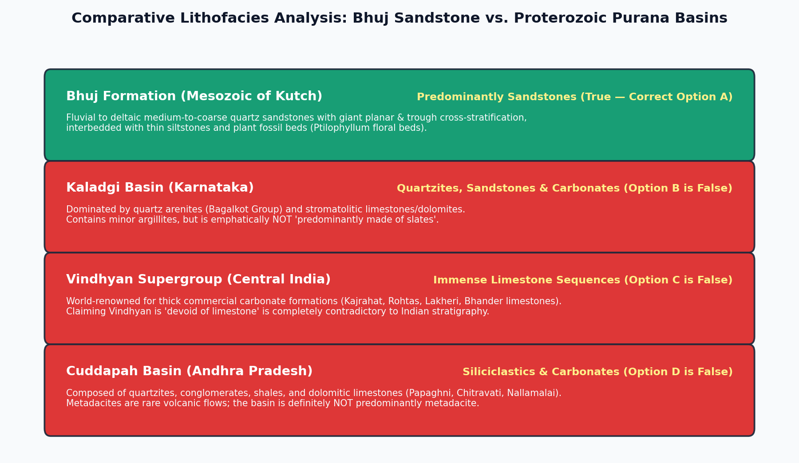

Forensic evaluation of sedimentary successions in competitive examinations requires precise familiarity with diagnostic lithofacies across both Phanerozoic pericratonic rift basins (such as the Kutch Basin) and Proterozoic intracratonic Purana basins (Vindhyan, Cuddapah, Kaladgi, and Bhima).

| Basin / Formation | True Dominant Lithology | Tested Distractor Statement | Forensic Verdict |
|---|---|---|---|
| Bhuj Formation (Mesozoic, Kutch) | Cross-bedded quartz sandstones & deltaic grits | "Consists predominantly of sandstones" | TRUE & FACTUALLY CORRECT (A) |
| Kaladgi Basin (Karnataka) | Quartz arenites, dolomites, limestones, conglomerates | "Predominantly made of slates" | FALSE (Predominantly quartzites & carbonates) |
| Vindhyan Supergroup (Central India) | Sandstones, shales, and thick carbonate platforms | "Devoid of limestone" | FALSE (Houses India's greatest limestone deposits) |
| Cuddapah Basin (Andhra Pradesh) | Quartzites, conglomerates, shales, dolomites | "Predominantly made of metadacites" | FALSE (Overwhelmingly sedimentary, minor volcanics) |